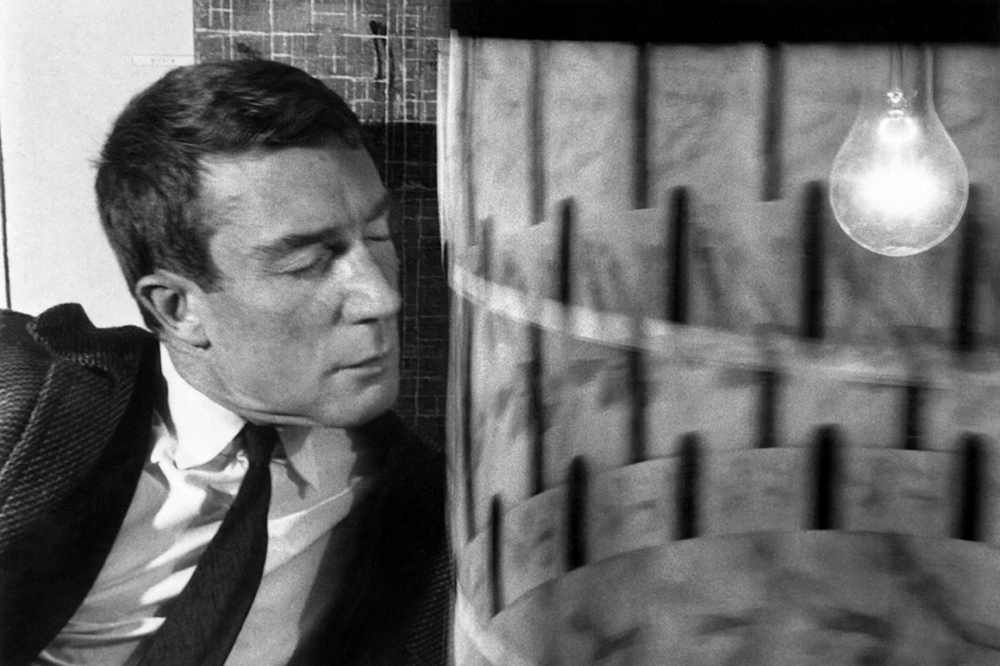

Brion Gysin (19 January 1916 – 13 July 1986) was a British-Canadian painter, writer, sound poet, performance artist and inventor of experimental devices, known for the cut-up technique and the Dreamachine.

Lived in Paris and Tangier, close collaborator of William S. Burroughs, with whom he developed cut-up writing in the Beat Hotel. Invented Dreamachine (1961) with Ian Sommerville, a flicker device viewed with eyes closed. His calligraphic paintings blended Japanese and Arabic scripts.
Influenced David Bowie, Laurie Anderson, and industrial music. See William S. Burroughs, Cut-up technique.